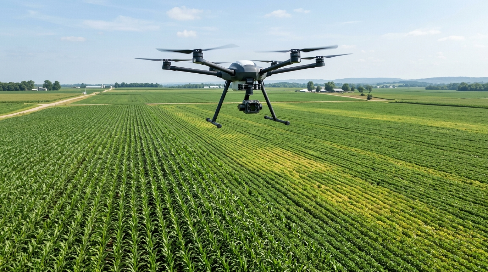
DEMOCrop health mapping
Highlight unusual crop patterns from aerial images to guide closer field scouting.
Bring weather, crop planning and farm calculations together in one place.
Make informed decisions with simple tools for your farm.

QUICK ACCESS
LOCAL CONDITIONS
Forecasts are guidance only. Check local advisories before farm operations.
AGMARKNET · రైతు మార్కెట్ సమాచారం
Compare reported mandi wholesale prices by state and crop. Prices are daily reports in rupees per quintal, so check the report date before making a sale decision.
| Market / మార్కెట్ | District / జిల్లా | Variety / రకం | Min / కనిష్ఠం | Modal / మధ్యస్థం | Max / గరిష్ఠం | Date / తేదీ |
|---|---|---|---|---|---|---|
| Choose a state and commodity to load prices. | ||||||
Source: Government of India Open Data (AGMARKNET), accessed through a public API mirror. Prices are mandi-reported daily wholesale rates, not guaranteed farm-gate offers.
SMART FIELD OPERATIONS
Explore ways aerial imagery and AI can help farmers inspect fields and plan targeted action.

DEMOHighlight unusual crop patterns from aerial images to guide closer field scouting.
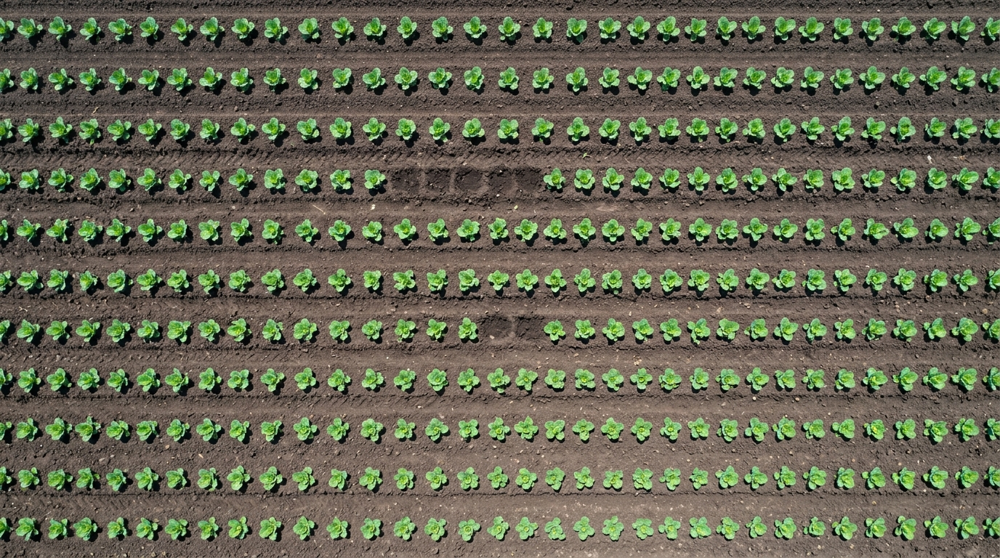
DEMOReview crop stand density and locate areas that may need replanting or inspection.
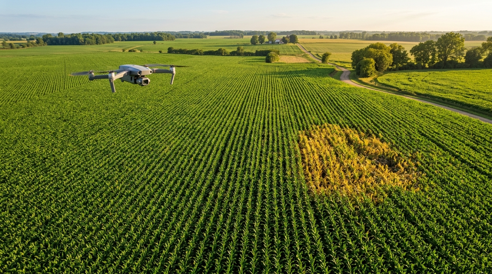
DEMOMark patches of possible pest, disease, weed, or nutrient stress for expert review.
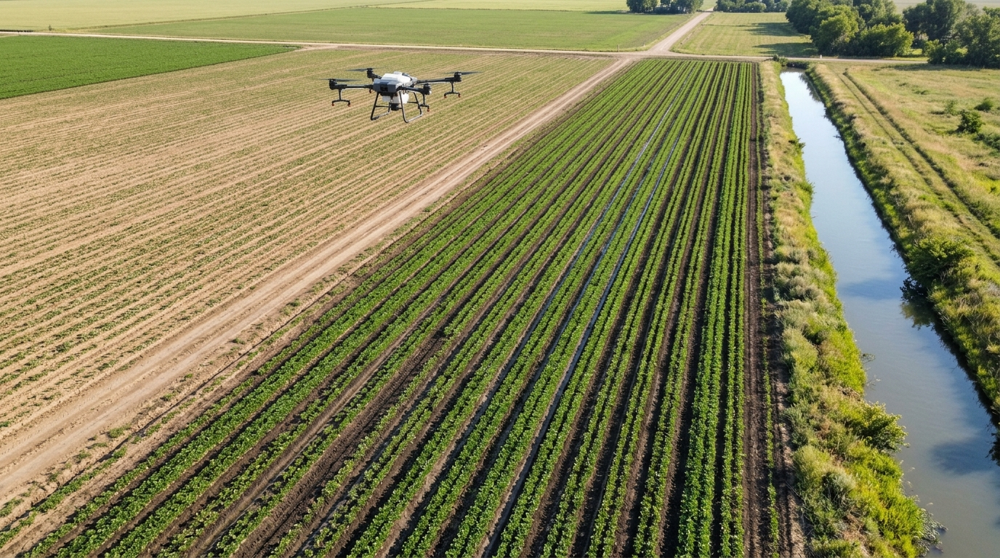
DEMOUse field patterns to prioritize areas for on-ground moisture and irrigation checks.
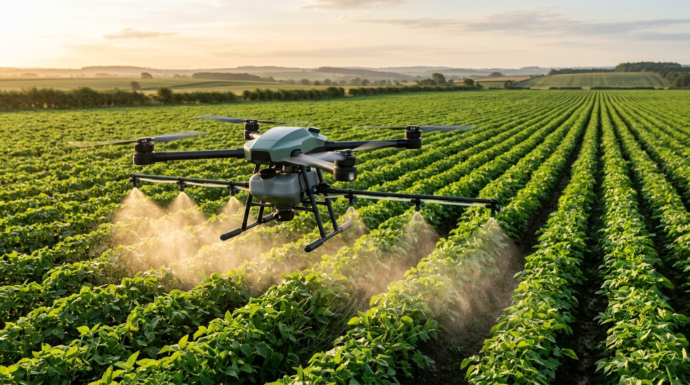
DEMOIdentify candidate treatment zones for review; verify product labels and local rules before spraying.
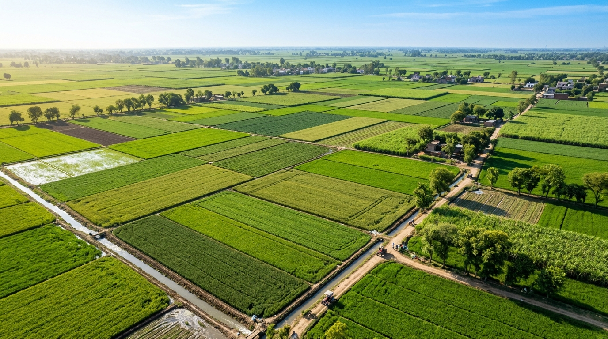
DEMOCreate visual field records to compare crop development across scouting visits.
TOOLS FOR EVERY FARMING STAGE
Explore common machines by the farm job they help with.
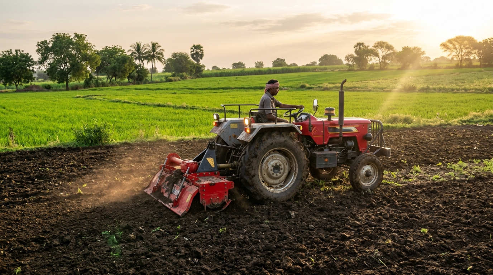
DEMOPrepare land, pull compatible implements, and transport farm materials. Choose power and size for your acreage and terrain.
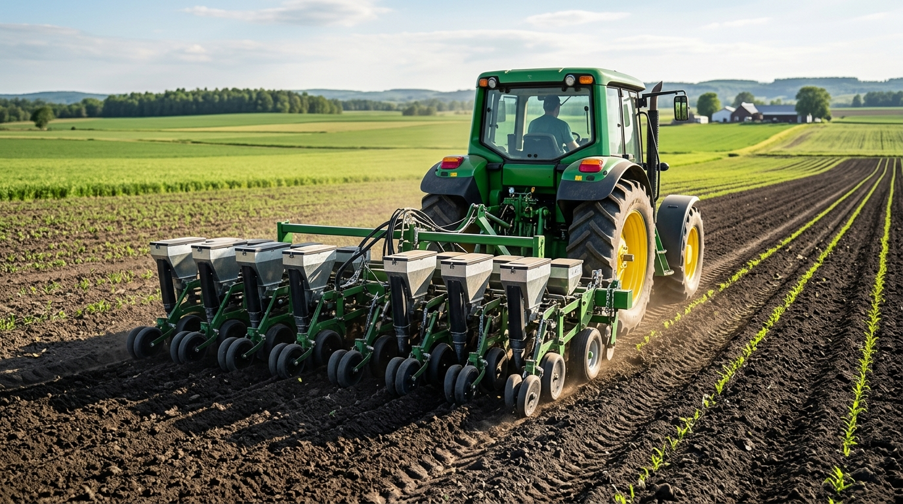
DEMOPlace seeds in rows at a more even spacing and depth. Match the machine to crop, seed size, and row spacing.
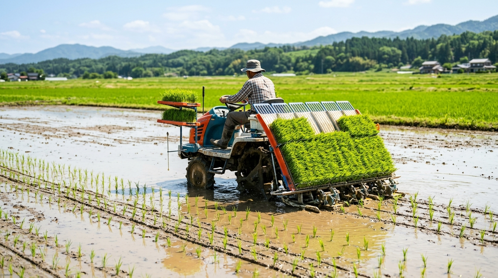
DEMOHelp transplant nursery-raised rice seedlings in rows. Field leveling, seedling mat preparation, and operator training matter.
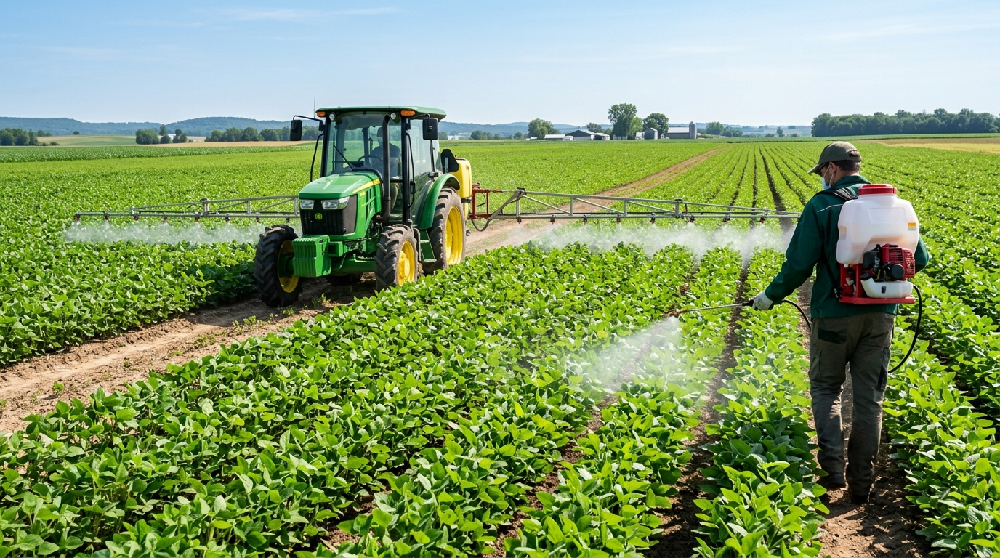
DEMOApply approved crop inputs with suitable nozzles and calibration. Wear protective equipment and follow the product label.
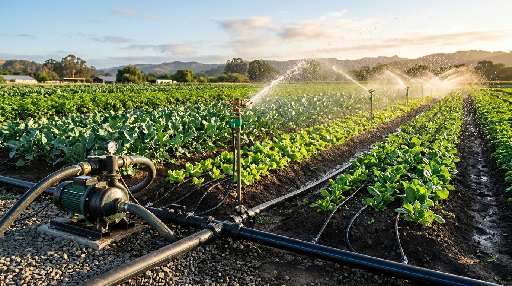
DEMOMove water to fields using pumps, pipes, sprinklers, or drip lines selected for the water source and crop.
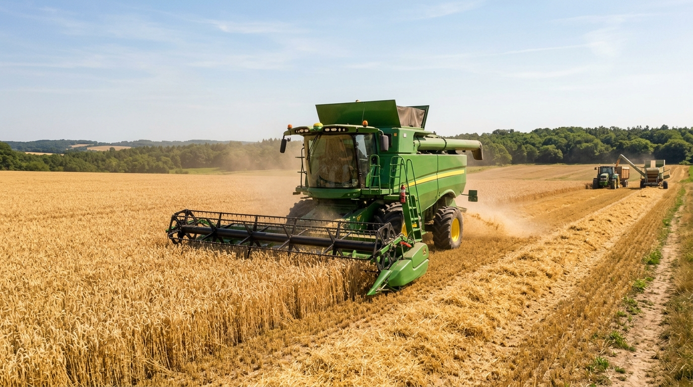
DEMOHarvest or separate grain from crop residue. Check crop compatibility, field access, moisture, and service availability.
SOIL INSIGHTS · SHC GUIDE
Enter values from your Soil Health Card report to check parameter status and indicative fertilizer guidance.
Indicative educational ranges modeled on Soil Health Card parameters. Nutrient categories vary by soil, crop, and lab method—follow your official Soil Health Card or KVK recommendation.
FARM ECONOMICS
Estimate a crop's income after your listed expenses.
An estimate, not a price guarantee. Excludes costs you have not entered and market fluctuations.
AI SEASON PLANNER
AI guide on what to do in farming across the full crop cycle, plus daily advice in Telugu.
ఉదయం లేదా సాయంత్రం చల్లని వేళల్లో మాత్రమే నీరు పెట్టండి; మధ్యాహ్నం ఎండలో నీరు పెడితే ఆవిరై వృథా అవుతుంది.
AI guidance provides general seasonal schedules. Adjust sowing, fertilizer and irrigation with your local KVK or agriculture officer.
PLANT PROTECTION
Take a clear photo of the affected leaf, or choose an image from your gallery. Analysis starts automatically.
Photo-based results are estimates, not confirmed diagnoses. Verify with a local KVK or agriculture officer before applying treatments.
SUPPORT FOR FARMERS
Official information and beneficiary services for eligible farmer families.
Official website ↗Crop insurance information, notifications and farmer services.
Official website ↗Learn about soil testing and soil health card services.
Official website ↗Information on solar pumps and solarisation support for agricultural power needs.
Official website ↗Explore the electronic national market platform for agricultural commodities and participating mandis.
Official website ↗Financing information for eligible post-harvest infrastructure and community farming asset projects.
Official website ↗Learn about government support and training resources for natural farming practices.
Official website ↗Eligibility, benefits and application windows can change. Verify details on the official portal or with your agriculture department.
FARMER ACCOUNT
Create a local demo profile or sign in on this device.
Demo only: profile details are stored in this browser. Do not use a real password or sensitive personal information. This is not secure production authentication.
Demo purpose only: this illustrative preview shows typical machinery usage. Compare local models, rental rates, and KVK guidance before hiring or buying.